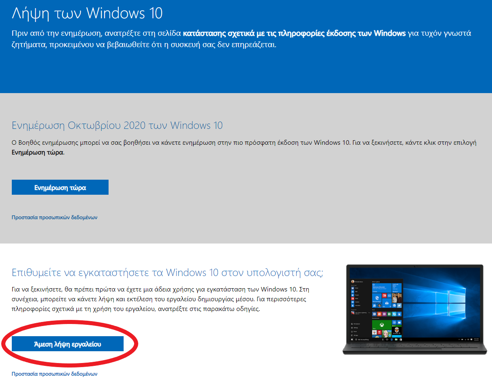
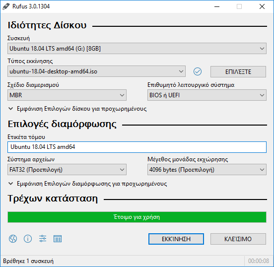
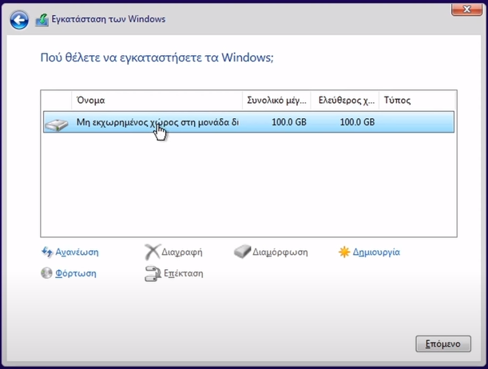

 Αρχικά θα πρέπει να κάνουμε λήψη των Windows 10 από την αντίστοιχη σελίδα της microsoft, πατώντας αριστερό κλίκ στο πλαίσιο που αναγράφεται η φράση "Άμεση λήψη εργαλείου". Στη συνέχεια "τρέχουμε" το αρχείο που κατέβηκε και αποδεχόμαστε τους όρους χρήσης. Επιλέγουμε στο επόμενο βήμα την κουκίδα "Δημιουργία μέσων εγκατάστασης", μετά ρυθμίζουμε γλώσσα και στο αμέσως επόμενο βήμα έχουμε να επιλέξουμε ανάμεσα σε δύο μέσα, που θα εκτελέσουμε για την εγκατάσταση: Μονάδα flash usb ή αρχείο ISO. Επιλέγοντας το πρώτο θα χρειαστούμε στικάκι usb με χώρο μεγαλύτερο απο 8 gb, ( ΠΡΟΣΟΧΗ!! όλα τα αρχεία που υπάρχουν στο στικάκι θα διαγραφούν, οπότε σιγουρευτείτε οτι δεν υπάρχει κανένα.) και περιμένουμε να κατέβουν τα windows και να γραφτούν στο φλασάκι.  Με την επιλογή του αρχείου ISO (Τo αρχείο ISO λοιπόν είναι μια εικόνα δίσκου, ένα συμπαγές αρχείο που μέσα της εμπεριέχει διάφορα αρχεία και φακέλους, πράγματα απαραίτητα για την εγκατάσταση ενός προγράμματος είτε είναι κάποιο λειτουργικό είτε κάποια εφαρμογή ή κάποιο παιχνίδι που παίζεται σε υπολογιστή.) ως μέσο εγκατάστασης των windows θα χρειαστεί να γράψουμε εμείς σε ένα στικάκι αυτο το αρχέιο με την βοήθεια του ελέυθερου λογισμικού Rufus. Το στικάκι ή οπιοδήποτε άλλο μέσο επιλέξετε θα γίνει bootable και αυτό σημαίνει ότι θα διαγραφούν όλα τα αρχεία που περιέχει , οπότε πρέπει να προσέχετε.Έπειτα είναι έτοιμο για χρήση και ισχύουν τα παρακάτω όπως στο επόμενο βήμα.
 Στη συνέχεια, τοποθετούμε το φλασάκι στην αντίστοιχη θύρα usb του υπολογιστή και τον ανοίγουμε. Αν δεν υπάρχει κάποιο λογισμικό ήδη εγκατεστημένο δεν θα χρειαστεί κάποια αλλαγή στο BIOS και θα γίνει το boot κατευθείαν από το φλασάκι. Έπειτα, αφού ρυθμίσουμε τη γλώσσα που επιθυμούμε, πατάμε την επιλογή 'Εγκατάσταση των windows'. Σε αυτό το σημείο θα μας ζητηθεί ένα κλειδί προιόντος το οποίο και γράφουμε στο αντίστοιχο πλαίσιο. Αν δεν διαθέτουμε κάποιο κλειδί μπορούμε να αγοράσουμε ένα από το keys worlds ή να συνεχίσουμε χωρίς την χρήση του. Στη συνέχεια διαλέγουμε και πατάμε κλικ στην έκδοση των windows που επιθυμούμε και μετά την αποδοχή των όρων χρήσης επιλέγουμε τον δίσκο στον οποίο θέλουμε να εγκατασταθούν τα windows. Την αυτοματοποιημένη διαδικασία εγκατάστασης ακολουθούν ορισμένες ρυθμίσεις σχετικά με την περιοχή μας και την γλώσσα πληκτρολογίου. Μόλις ολοκληρώσουμε και αυτές τις ρυθμίσεις επιλέγουμε ανάμεσα στην συνέχεια με ή χωρίς προσθήκη λογαριασμού microsoft. Τέλος βάζουμε το όνομα χρήστη που επιθυμούμε και κωδικό πρόσβασης αν θέλουμε και κάνουμε τις τελευταίες ρυθμίσεις σχετικά με τα δεδομένα μας.
Το τρίτο και τελευταίο βήμα σχετίζεται με την εγκατάσταση των drivers και τα updates των windows. Τα windows 10 έχουν πολλούς drivers προεγκατεστημένους και κάποιοι θα εγκατασταθούν με ορισμένα updates. Παρ'όλ'αυτά καλό είναι να εγκαταστήσουμε τους drivers των κύριων μερών του hardware (επεξεργαστής, κάρτα γραφικών και μητρική κάρτα.) χειροκίνητα. Για να γίνει αυτό πρώτα απενεργοποιούμε τις αυτόματες ενημερώσεις των windows από τις ρυθμίσεις του υπολογιστή και στη συνέχεια να κατεβάσουμε τους drivers κάθε μέρους hardware από την αντίστοιχη ιστοσελίδα του κατασκευαστή.
Για να δείτε το αντίστοιχο βίντεο στο youtube πατήστε εδώ.